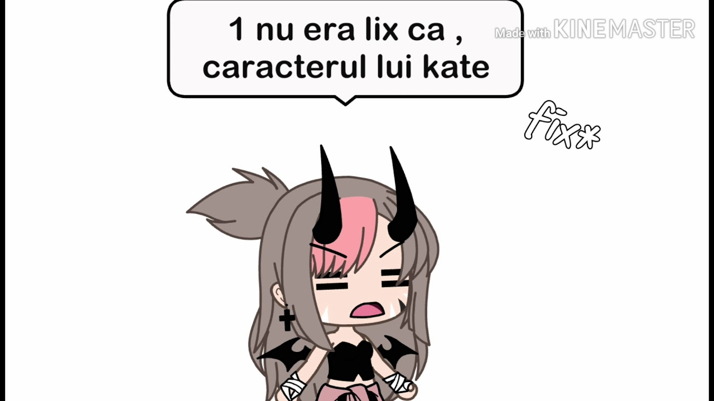

Fericiți cei Prigoniți
 VEZI LISTĂ COMPLETĂ Despre Proiect Bannere FCP Contact Mărturisitori Închisori Prigoana comunistă Viața duhovnicească Prigonitori Sinteze Anunțuri Mărturii Video | Foto | Poezii | Bibliotecă Blogurile F C PÎnchisori şi locuri de prigoană
Aiud - cetatea morţii Bărăganul - pământul exilaţilor Târgu Ocna - lumina din răni Târgşor - închisoare copiilor Cavnic - robii din adâncuri Gherla - împărăţia morţii Jilava - pântecele chitului Mislea - mănăstirea cu gratii Piteşti - răstignirea unei generaţii Suceava - sâmburele reeducăriiPrigoana comunist-ateistă
Istoria prigoanei Teologia fenomenului reeducării Rezistenţa împotriva prigoanei Metode de tortură şi chin Fenomenul şi psihologia reeducării Efectele prigoanei Efectele reeducăriiMedia kit FCP (bannere)
Mărturii ale cititorilor
10 cărți de bază
Promovăm
Profesorul George Manu - Rectorul Universității Aiud
Detalii Categoria părinte: Mărturisitori Categorie: George ManuDescendent al unei vechi familii de intelectuali patrioţi (era nepotul generalului George Manu - 1838 - 1911 -, cel care s-a distins în războiul de independenţă şi care a fost în repetate rânduri ministru), profesorul George Manu a fost arestat în 1948, implicat cu alte vârfuri ale intelectualităţii politice româneşti în Procesul Marei Trădări Naţionale şi condamnat la 25 de ani muncă silnică.
În momentul arestării era profesor de fizică nucleară la Politehnica din Bucureşti, fiind considerat, alături de profesorul Horia Hulubei, unul dintre marii atomişti ai ţării. Se spune despre el că, după condamnare, ar fi fost vizitat la Aiud de un consilier sovietic care i-ar fi propus ca în schimbul eliberării , să accepte să lucreze în laboratoarele din Uniunea Sovietică alături de un cunoscut atomist rus cu care el fusese coleg de studii în Germania. Dar profesorul George Manu a refuzat demn această ofertă, nevoind să lucreze pentru cei pecare îi considera, pe bună dreptate, duşmani ai neamului românesc.
Profesorul George Manu nu era numai un reputat om de ştiinţă, recunoscut ca atare şi de adversari, ci avea şi temeinice studii umaniste. Filozofia, teologia, dreptul, filologia şi mai cu seamă literatura erau domenii în care se mişca cu aceeaşi uşurinţă ca şi în domeniul său de specialitate care era, după cum am amintit deja, fizica nucleară. Era o adevărată enciclopedie şi dacă este adevărat (şi, de bună seamă, este) că închisorile comuniste au fost adevărate Universităţi , atunci „Universitatea Aiud” a avut ca „rector” între anii 1954 şi 1961, anul morţii sale, pe profesorul George Manu.
Revenit în Aiud în anul 1954 de la mina de plumb Baia Sprie cu un lot de 60 de deţinuţi, toţi în lanţuri, mutaţi în această închisoare disciplinar în urma unei greve care a avut loc la această mină, profesorul George Manu se număra printre cei peste 50 de deţinuţi din acest lot bolnavi de tuberculoză. La început i s-a diagnosticat un T.B.C. ganglionar dar, supus împreună cu toţi ceilalţi unui regim disciplinar extrem de sever, fără hrană adecvată, fără asistenţă medicală şi fără îngrijirea elementară reclamată de această boală, starea sănătăţii lui s-a înrăutăţit continuu, ajungând până la urmă să-i fie fatală. Cu toate acestea, profesorul George Manu a început o susţinută şi incredibilă -în condiţiile de totală izolare din închisori activitate pe care , fără să greşim, o putem numi didactică.
Vocaţia de dascăl nu l-a părăsit nici chiar în aceste vitrege condiţii pe marele om de cultură. În această perioadă, Aiudul era populat de foarte mulţi tineri care fuseseră arestaţi de pe băncile şcolii sau ale universităţilor şi care erau, deci, cu studiile neterminate şi instrucţie incompletă. Majoritatea acestora, avizi de cunoaştere, apelau, pentru a-şi completa bagajul de cunoştinţe, la „bătrâni”care în marea lor majoritate fiind intelectuali le puneau la dispoziţie cunoştinţele lor. Printre cei mai activi în acest sens s-a dovedit a fi , fără îndoială, profesorul George Manu. În toată această perioadă, el a transmis, prin viu grai celor care au avut norocul să împartă celula cu el, ori cu el, ori prin morse (profesorul George Manu era un morsist desăvârşit ) celor din celelalte celule, zeci şi sute de conferinţe, prelegeri ori lecţii din toate domeniile ştiinţelor umaniste : istorie, drept, geografie, filozofie, literatură, limbi străine (franceza şi engleza mai ales) etc., care erau memorate ori scrise pe pereţi, pe bucăţi de săpun, pe cioburi de sticlă, etc. şi apoi, transmise din celulă în celulă şi din om în om. Mulţi dintre cei care au ieşit din închisoare cu temeinice cunoştinţe de limbă şi literatură engleză de exemplu, lui îi datorează acest lucru. Eu nu l-am cunoscut personal, însă multe dintre lecţiile elaborate de el au ajuns şi în celula în care mă aflam, astfel că multe dintre cunoştinţele pe care le-am dobândit în închisoare lui i le datorez.
Profesorului George Manu i se datorează şi inventarea scrierii, cu ajutorul alfabetului morse, pe firul de aţă. Odată, un grup de studenţi care se aflau la un alt etaj decât cel pe care se afla el, i-au cerut (prin morse, bineînţeles) să le transmită câteva dintre principiile de bază ale Constituţiei americane. Profesorul a refăcut din memorie, cu aproximaţie, toate cele şapte articole ale Constituţiei respective şi aştepta un moment prielnic ca să le poată transmite la destinaţie. Tocmai în acel moment s-a deschis uşa şi gardianul a dat celor din celulă ac şi aţă pentru repararea echipamentului. Văzând aţa, profesorului Manu i-a revenit ideea ca să transpună pe ea, în alfabet morse (un nod dublu, linia, un nod simplu, punctul) textul pe care îl avea de transmis. Cu migală şi cu multă răbdare, făcând mii de noduri, a reuşit să „scrie” pe câţiva zeci de metri de aţă textul celor şapte articole ale Constituţiei americane. A făcut apoi un ghem pe care l-a transmis destinatarilor împreună cu instrucţiunile de decodare.
Această nouă metodă de scriere a constituit o adevărată revoluţie de comunicare din închisoare. Şi a dat multe dureri de cap celor care vegheau ca deţinuţii să nu comunice între ei.
După 1958, când la conducerea închisorii Aiud a venit colonelul Crăciun şi au început pregătirile pentru declanşarea reeducării, profesorului George Manu, despre care administraţia închisorii ştia că are o mare influenţă asupra celorlalţi deţinuţi, i s-a cerut -ca şi celorlalte personalităţi din Aiud- să accepte reeducarea şi să facă în faţa deţinuţilor o declaraţie de desolidarizare de trecut şi de toate crezurile şi idealurile sale. Cu toate presiunile care s-au făcut asupra lui, el a refuzat demn şi fără ostentaţie orice compromis. Pentru atitudinea fermă şi fără echivoc, profesorul George Manu a plătit cu viaţa. Datorită regimului inuman la care a fost supus în urma refuzului său categoric de a face declaraţiile care i se cereau, boala i s- a agravat. Ultimul diagnostic pus de medicul oficial al închisorii, doctoriţa Balea, în prezenţa colonelului Crăciun , a fost meningită T.B.C. Tratamentul însă i s-a refuzat şi de data aceasta, fiindu-i condiţionat de semnarea declaraţiei care i se cerea. S-a stins din viaţă împăcat cu sine şi cu toţi cei din jur, în 1961, în infirmeria Aiudului, unde a fost internat doar cu câteva ore înainte de a muri.
(Demostene Andronescu - Reeducarea de la Aiud. Peisaj lăuntric. Memorii și versuri din închisoare, Editura Christiana, București, 2009, pp. 144-146)
Prec CommentsGabriela 07-05-2012 16:37
Mă bucur să citesc aceste mărturii despre mari oameni care au construit România cu sacrificiul lor. Eu fac parte din generația lui Ceaușescu și toate aceste mărturii, fapte și evenimente din perioada instaurării comunismului in România ne-a fost practic ascunsă... așa că noi nu ne cunoaștem adevărata istorie...Mulțumesc acestor oameni care s-au luptat să aducă la cunoștința opiniei publice parte din istoria ȚĂRII!
Gabriela
Administrator 09-05-2012 16:32
Și noi ne bucurăm doamna Gabriela, că deși faceți parte din ”generația lui Ceaușescu”, totuși nu sunteți tributară efectelor comunismului, dintre care unul foarte dureros este UITAREA înaintașilor noștri. Privesc în jur și văd atâția oameni care au prins comunismul și încă îi regretă ”părțile bune” dar nu se întreabă pe spatele cui au fost realizate acele ”părți bune”? Pe de altă parte mă doare sufletul să văd atâția oameni care deși au prins comunismul și îl condamnă așa cum se cuvine, totuși nu se ostenesc să afle și cine s-a luptat pentru ca noi să avem libertatea de a condamna comunismul fără să facem pușcărie. Deci căror oameni datorăm noi astăzi recunoștință? Au murit mii de oameni în temnițe sau împușcați prin munți ca noi să fim astăzi liberi și să putem spune ”Hristos a înviat”, fără frică!...De aceea avem datoria să nu-i uităm pe acești înaintași ai noștri, și mai ales, avem datoria să le urmăm modelul de sfințenie și demnitate.Din păcate, comunismul a realizat parțial ceea ce și-a propus din esența ideologiei ateiste: ”omul nou”...omul ateu. Am fost dezrădăcinați de memoria înaintașilor noștri, a fost fragmentată moștenirea de valoare dintre genererații și abia, abia ne dezmeticim să vedem ce-i cu noi. Mai avem mult până ne vom reface ca neam după ”binefacerile” comunismului.
Cuvintele dumneavoastră mi-au adus aminte de o întâmplare pe care am citit-o în cartea Întoarcerea la Hristos de Ioan Ianolide și care reflectă cât se poate de clar ceea ce urmăreau comuniștii:
”În concepţia lor omul nu conta, căci orice om poate fi înlocuit cu un altul, conta numai sistemul. Ori ideile acestor oameni minau tocmai sistemul şi deci sentinţele erau definitive.
O singură dată a mai avut o discuţie pe această temă cu un inspector. Acesta venise de la Bucureşti. S-a oprit la patul lui Valeriu şi l-a întrebat:
- Cum te cheamă, deţinut?
- Să trăiţi domnule inspector, sunt deţinutul Valeriu Gafencu, a răspuns el cu formula obligatorie.
- Aha! a exclamat politrucul privindu-l cenuşiu.
- Domnule inspector, vă rugăm să ne acordaţi drepturile pe care le-au avut şi deţinuţii comunişti aici.
- Noi nu vom repeta greşelile trecutului, a răspuns sec inspectorul. Umanismul nostru nu se aplică reacţionarilor.
- Domnule, a continuat Valeriu, aici suntem oameni bolnavi, neputincioşi, zilnic moare câte unul dintre noi, şi pe lângă toate astea suntem supuşi ameninţării cu teroarea şi tortura.- Cum îndrăzneşti să vorbeşti astfel cu mine? Nu pricepi că nu vrem să facem din voi eroi? Vom face din voi delatori, iar din nevestele şi surorile voastre prostituate!
Valeriu era adânc îndurerat şi a răspuns:
- Păcatele lumii acesteia trebuie ispăşite. Noi ispăşim aici multe păcate. Cu toţii însă suntem în mâinile lui Dumnezeu.
- Eşti un bandit mistic! Aici vei muri! Să nu crezi c-o să scapi cu viaţă! Aşa cum eşti va trebui să primeşti reeducarea !
- Aşa cum sunt este o binefacere, a răspuns Valeriu, căci nu voi rezista mult, sunt suficiente câteva lovituri ca să mă doboare.
- Du-te dracului! a urlat inspectorul. Vom avea grijă să mori încet, chinuit, până ce vei renunţa la Hristosul acela cu care vrei să ne sperii. Pe El şi pe tine, pe voi toţi vă urâm, bă, şi vă vom distruge! Aici s-a terminat cu Hristos, şi Cel mort şi Cel înviat! Vom avea grijă ca generaţiile viitoare să nu mai ştie minciunile Lui şi ale voastre. Noi, bă, noi suntem hristosul lumii acesteia. ”
În final, doamna Gabriela, eu vă urez să vă luați revanșa față de cenzorii ideologici ai neamului românesc și să aflați tot ce au vrut să ascundă sub lespedea ateismului: faptul că suntem creștini chemați de Dumnezeu la mântuire.
Domnul să vă aibe în pază!
Administrator REFRESH
RSS JComments
Comemorari recente
13 Septembrie Marina Chirca 7 de ani de latrecerea la Domnul 14 Septembrie Pr. Sofian Boghiu 18 de ani de la
trecerea la Domnul 15 Septembrie Pr. Nicolae Pogan 36 de ani de la
trecerea la Domnul 16 Septembrie Nicu Popescu 21 de ani de la
trecerea la Domnul 16 Septembrie Pr. Andrei Iancu 60 de ani de la
trecerea la Domnul 17 Septembrie Dr. Alexandru Bireescu 67 de ani de la
trecerea la Domnul 18 Septembrie Pr. Ilarion Felea 59 de ani de la
trecerea la Domnul 18 Septembrie Constantin Aurel Dragodan 20 de ani de la
trecerea la Domnul Citatul zilei "Trebuie să mărturisim prin comportarea de zi cu zi, poate cu suferinţă, cu sânge şi chiar cu viaţa de ni se va cere." Traian Trifan